本文章將介紹 GCP 網路設定
本章所使用網路是使用 GCP 已經預設好的規劃 ( 各區域都已經分配完成 )
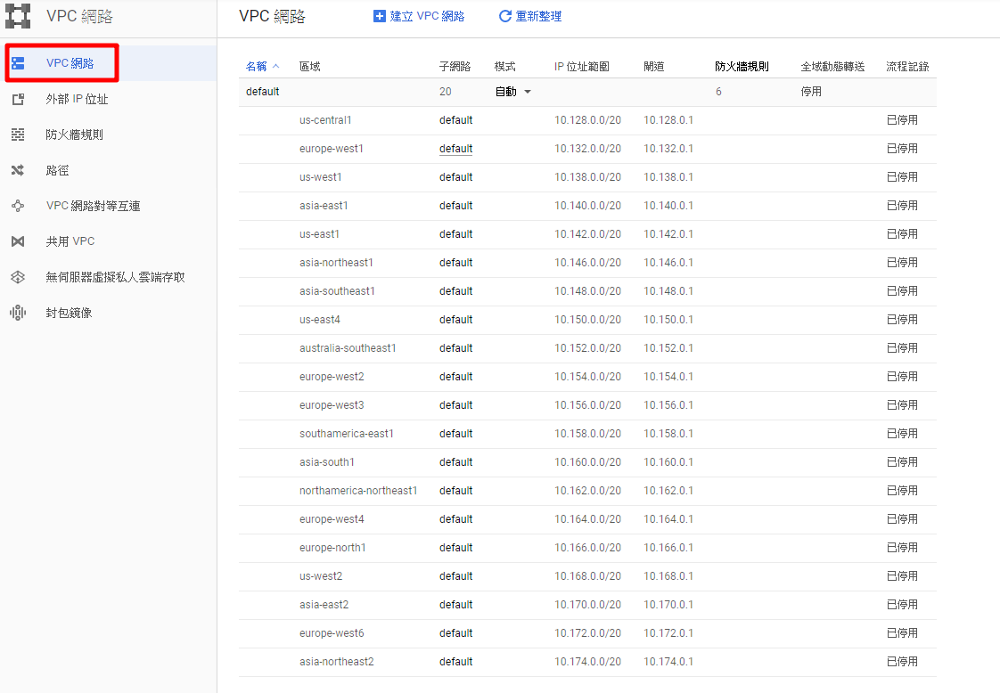
VM 建立網路預設都是動態 IP，想要保留 IP 我們就要把動態 IP 改為靜態 IP
外網動態：只要重開機 IP 就會變更，機器砍掉後 IP 不會保留
內網動態：重開機 IP 不會變更，機器砍掉後 IP 不會保留
一、內網設定：內部 IP 設定有2種方式
1. 在開 VM 時建立好，或是已經建好 VM 後到 VM 裡面再做編輯
2. 在 VPC 網路建立
第一種方式：建 VM 時下方管理、硬碟、網路、SSH 金鑰選擇網路，點筆圖案做設定
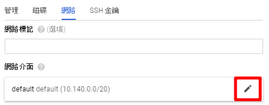
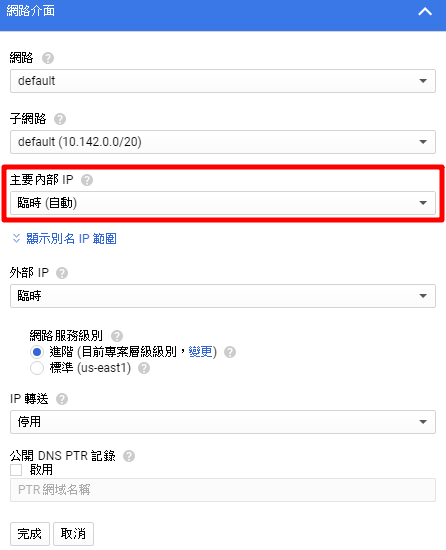
點選主要內部 IP 右邊 ▼，選擇預約靜態內部 IP 位址
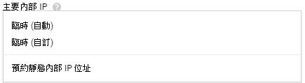
出現預約靜態內部 IP 位址畫面，輸入名稱跟說明，靜態 IP 位址選擇自動指派
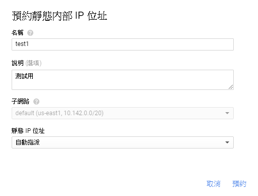
也可以選擇自行選擇，自訂 IP 位址內有告訴你範圍，但是建議自動指派就好
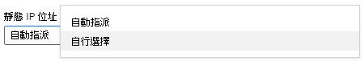
IP 範圍是固定的，是跟著區域走的
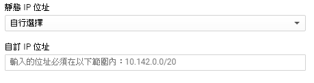
如果建立 VM 沒設定到，可以到 VM 執行個體 → 點擊 VM 名稱觀看詳細資料 → 點擊編輯修改
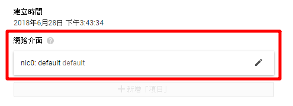
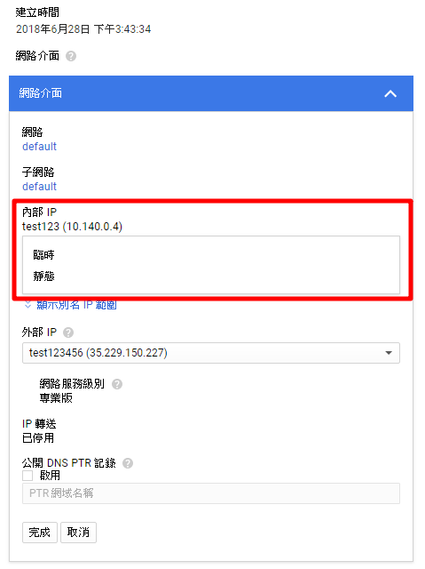
PS：改回臨時會釋放 IP
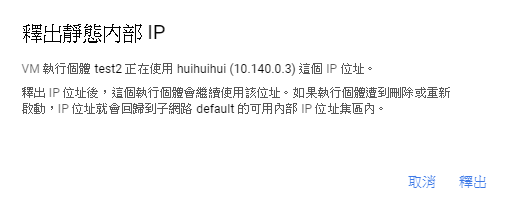
第二種方式：從另一個地方建立 VPC 網路 → VPC 網路
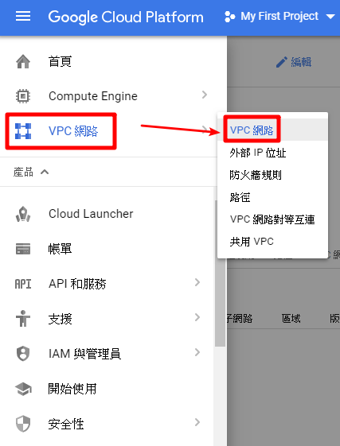
進入畫面後，點擊名稱下的 default 進入 VPC 網路詳細資料
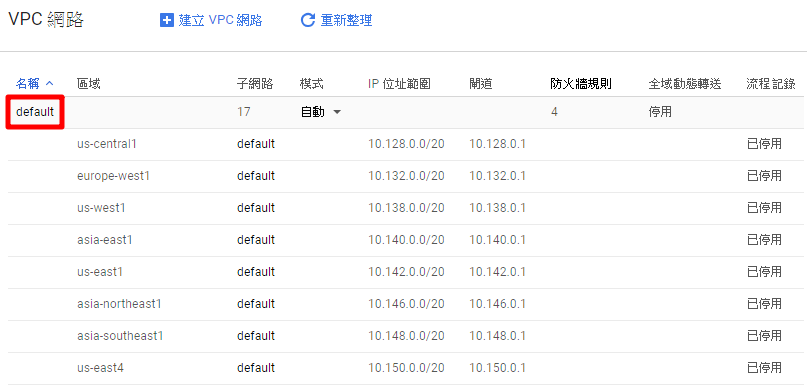
再點擊下方分頁靜態內部 IP 位址
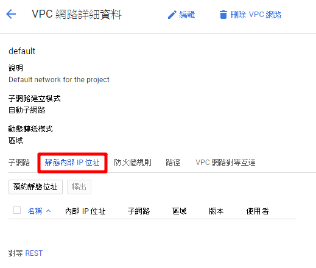
接下來點擊預約靜態網址預約網址，方式跟上面一樣
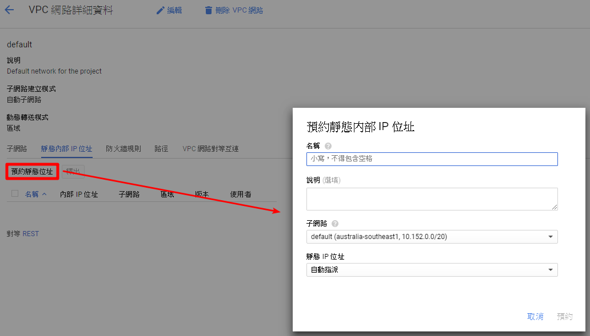
比較不一樣的是子網路沒有固定區域，要在自己選擇跟 VM 相同區域
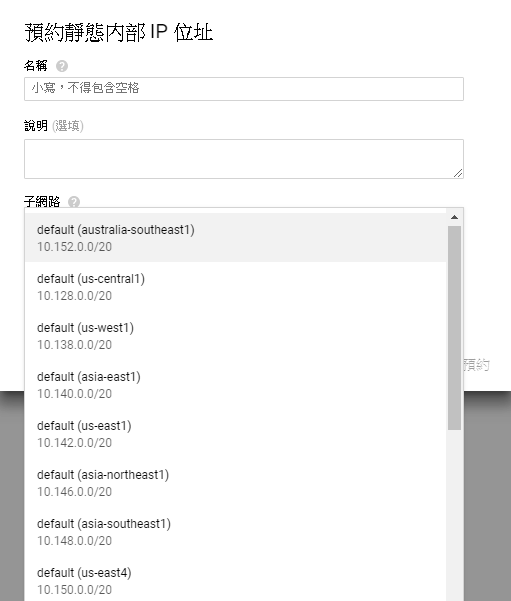
完成畫面
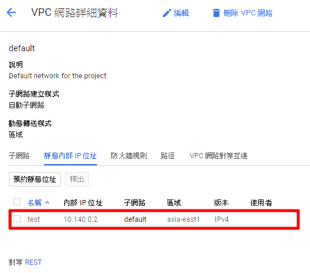
PS：記得沒用到的 IP 要釋放掉
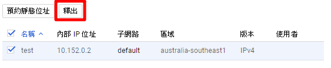
二、外網設定：外部 IP 設定有一樣有2種方式
1. 在開 VM 時建立好，或是已經建好 VM 到 VM 裡面再做編輯
2. 在 VPC 網路建立
第一種方式：建 VM 時下方管理、硬碟、網路、SSH 金鑰選擇網路，點筆圖案做設定
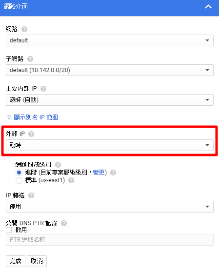
點選外部 IP 右邊 ▼，選擇建立 IP 位址
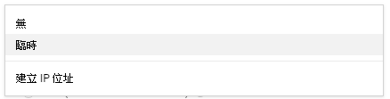
出現預約新的靜態 IP 位址畫面，輸入名稱跟說明，網路服務級別進階，標準如圖說明目前只有三個區域有
PS：進階是走 Google 的海底纜線，標準走的是網際網路會強制使用 IPv4
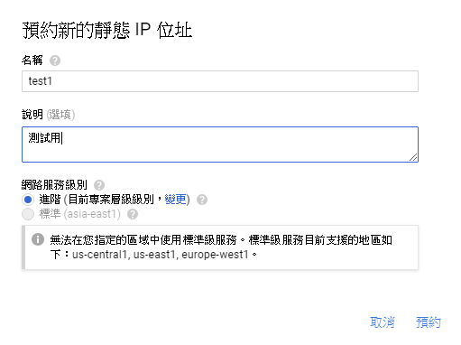
設定好畫面
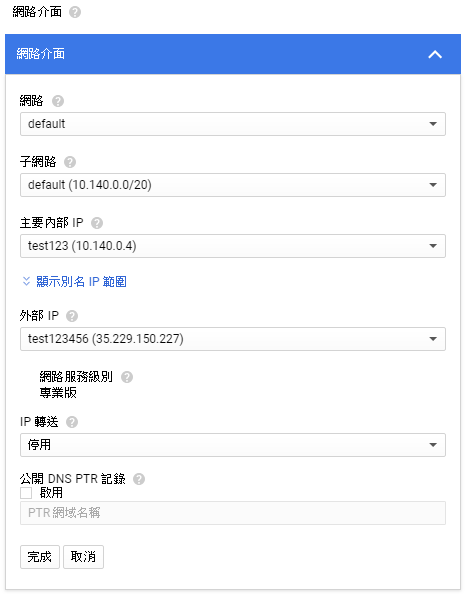
可以進入 VM 查看剛剛設定網路訊息
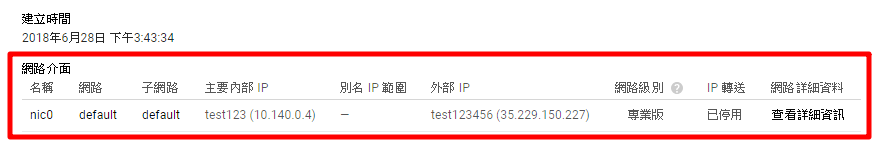
如果建立 VM 沒設定到，可以到 VM 執行個體 → 點擊 VM 名稱觀看詳細資料 → 點擊編輯修改
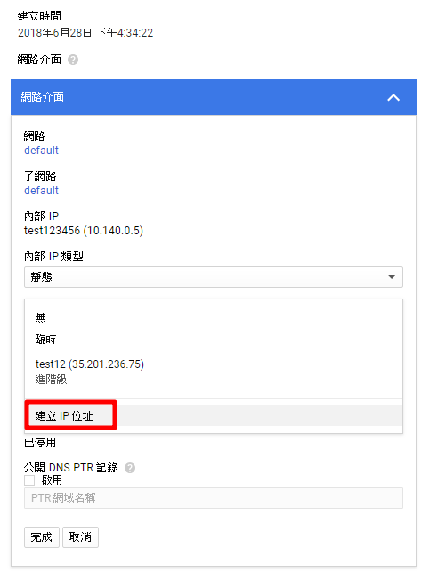
如果有建立多組 IP 可以隨時做更換
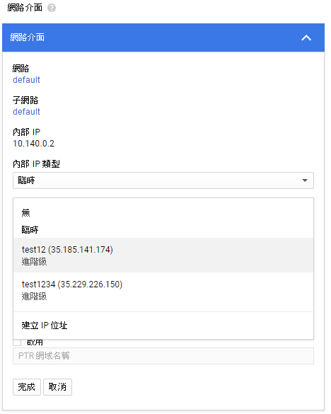
可以同時進入 VPC 網路 → 外部 IP 位址，使用者有做更換就是成功了
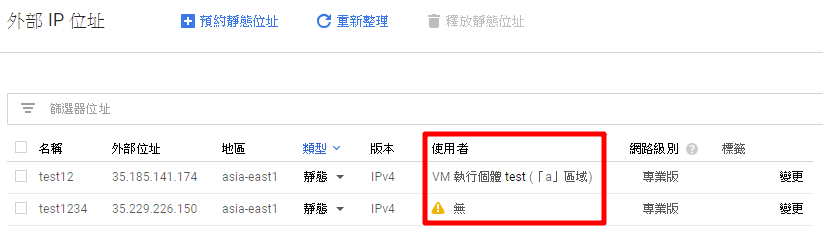
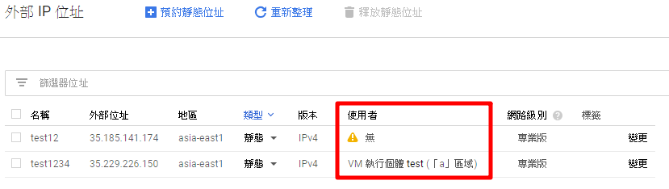
更改回臨時 IP 還是會存在，要到 VPC 網路 → 外部 IP 位址，釋放 IP
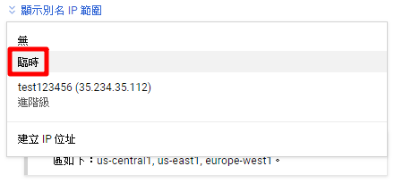
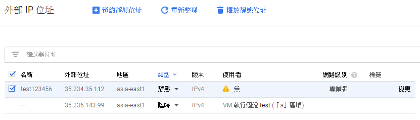
第二種方式：從另一個地方建立 VPC 網路 → 外部 IP 位址
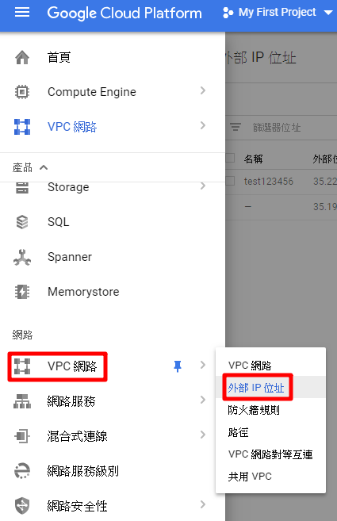
已經建立好 VM 但沒設定靜態 IP 進入時會看到下圖畫面類型會顯示臨時
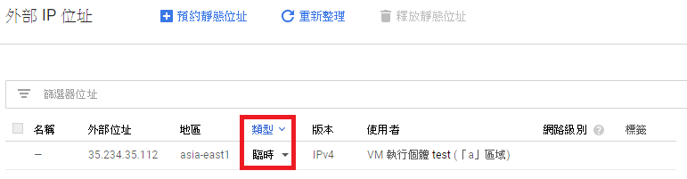
點擊臨時旁的 ▼ 會出現選項選擇靜態
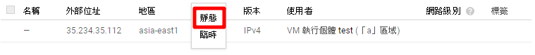
命名點擊預約，成功後前方名稱會更改為你命的名稱，類型更改為靜態就是成功了
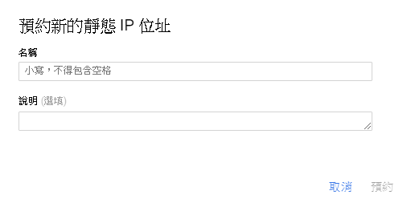
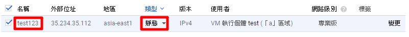
或是自己建立一個靜態 IP
點選預約靜態 IP ( 沒有建立 VM 和 IP 會出現下圖 ) 位址建立 IP
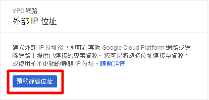
有建立 VM 或 IP 點上面預約靜態位址
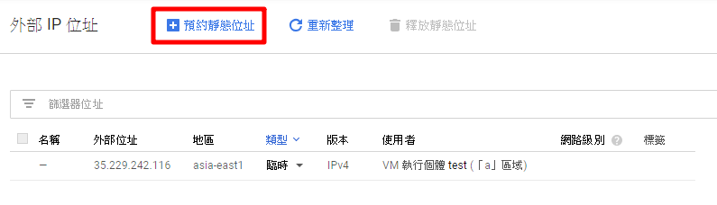
出現預約靜態位址畫面，設定名稱跟說明其他預設，區域選擇跟 VM 同區域 “連接到：” 選擇要改固定 IP 的 VM 名稱
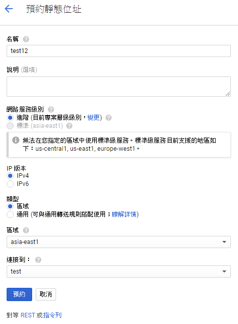
標準目前只有三個區域有 ( 進階是走 Google 的海底纜線，標準走的是網際網路會強制使用 IPv4 )
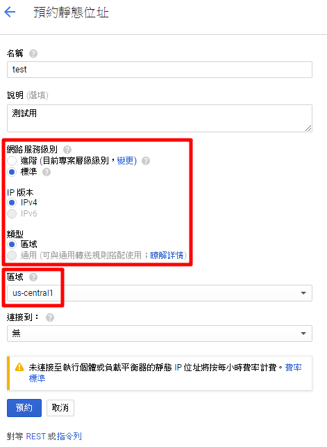
建立好畫面，點選你命名的名稱就可以直接進入 VM 執行個體詳細資料
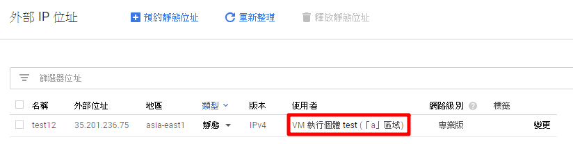
也可以先設定一組沒使用者的外部 IP，”連接到：”不設定 VM 名稱使用者會出現無
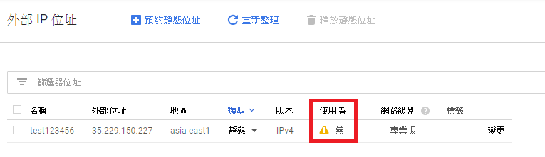
點選變更改成要的 VM 就可以把固定 IP 設定過去
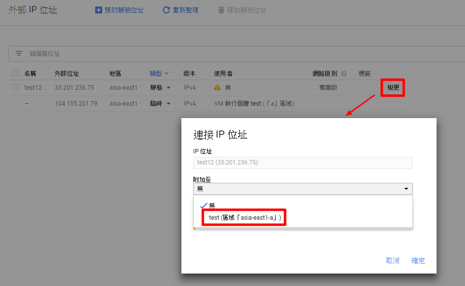
使用者彙編更成你設定的 VM 名稱
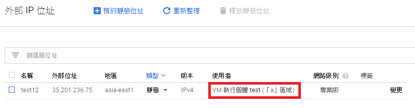
最後記得砍掉 VM，IP 還是會在，如果不需要要釋放掉
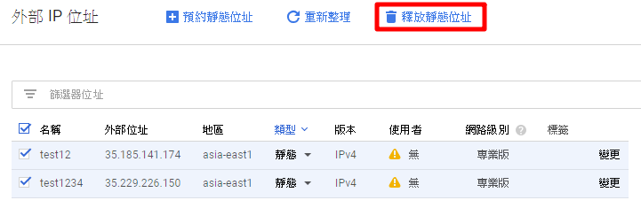